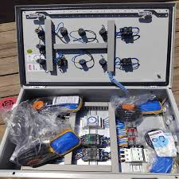
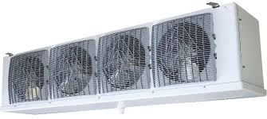

ما هو السوبرهيت وما هو السابكولينج؟
السوبرهيت هو الحرارة الزائدة لبخار المبرّد فوق درجة التشبع المقابلة لضغط السحب. إذا كان ضغط السحب يشير إلى أن درجة تشبع المبرّد داخل المبخر هي 0°م، بينما تقرأ عند مخرج المبخر 7°م، فإن السوبرهيت يساوي 7°م. هذه القيمة تخبرك هل المبخر يتغذى بسائل كافٍ أم أن المبرّد انتهى مبكراً وبدأت الأنابيب تنقل بخاراً جافاً أكثر من اللازم.
أما السابكولينج فهو التبريد الإضافي للسائل تحت درجة التشبع عند ضغط التكثيف. فإذا كان ضغط خط السائل يعادل درجة تشبع 40°م ودرجة حرارة خط السائل المقاسة 34°م، فالقيمة تساوي 6°م. وهو مؤشر مهم على جودة تكثيف المبرّد واستقرار عمود السائل قبل صمام التمدد.
لماذا هما الأهم في تشخيص النظام؟
لأن الضغوط وحدها قد تخدعك. قد ترى ضغط سحب منخفضاً فتظن أن المشكلة نقص شحنة، بينما السبب الحقيقي قد يكون فلتر جاف مسدود أو صمام تمدد مغلق أكثر من اللازم. هنا يظهر الفرق: عندما تقرأ السوبرهيت والسابكولينج معاً، فإنك ترى قصة حركة المبرّد كاملة داخل الدائرة.
- سوبرهيت مرتفع + سابكولينج منخفض: مؤشر قوي على نقص شحنة أو فلاش غاز.
- سوبرهيت مرتفع + سابكولينج طبيعي/مرتفع: تغذية ناقصة للمبخر بسبب TXV أو انسداد.
- سوبرهيت منخفض جداً + سابكولينج طبيعي: خطر رجوع سائل إلى الكمبروسر.
- سوبرهيت طبيعي + سابكولينج مرتفع جداً: احتمال شحنة زائدة أو امتلاء مكثف زائد.
| المؤشر | يُقاس عند | وظيفته التشخيصية | الخطر عند الانحراف |
|---|---|---|---|
| Superheat | مخرج المبخر / خط السحب | تقييم تغذية المبخر وحماية الكمبروسر | جفاف مفرط أو رجوع سائل |
| Subcooling | مخرج المكثف / خط السائل | تقييم جودة الشحنة واستقرار السائل | فلاش غاز أو شحنة زائدة |
خطوات القياس الموقعي الصحيحة
القراءة الخاطئة أخطر من عدم القراءة. قبل القياس يجب أن يكون النظام في حالة تشغيل مستقرة لمدة كافية، وأن يكون الحمل قريباً من ظروفه الطبيعية. لا تأخذ قراراً أثناء بدء التشغيل، أو مباشرة بعد إذابة الثلج، أو بينما الأبواب مفتوحة والحرارة غير مستقرة.
الخطوات الأساسية لقياس Superheat
- قِس ضغط السحب عند أقرب نقطة عملية لخط السحب.
- حوّل الضغط إلى درجة تشبع من خلال تطبيق المبرّد أو جدول PT.
- قِس حرارة ماسورة السحب بترمومتر مثبت جيداً ومعزول عن الجو.
- اطرح درجة التشبع من درجة حرارة الماسورة لتحصل على Superheat.
الخطوات الأساسية لقياس Subcooling
- قِس ضغط خط السائل أو ضغط الطرد بحسب نقطة القياس المعتمدة.
- حوّل الضغط إلى درجة تشبع للمبرّد نفسه.
- قِس حرارة خط السائل بعد المكثف أو بعد الريسيفر حسب التصميم.
- اطرح درجة حرارة خط السائل من درجة التشبع لتحصل على Subcooling.

القيم المرجعية حسب التطبيق
لا توجد قيمة موحّدة لكل الأنظمة. القيم المرجعية تعتمد على نوع صمام التمدد، نوع المبخر، طول خطوط الأنابيب، نوع الحمل، والمبرّد المستخدم. لكن هناك نطاقات ميدانية آمنة يعتمد عليها المهندسون كنقطة بداية.
| نوع التطبيق | Superheat عند المبخر | Subcooling | ملاحظة تشغيلية |
|---|---|---|---|
| غرف تبريد متوسطة الحرارة | 5 إلى 8°م | 4 إلى 8°م | الأكثر شيوعاً مع TXV |
| غرف تجميد منخفضة الحرارة | 6 إلى 10°م | 5 إلى 10°م | يُفضّل هامش حماية أكبر للكمبروسر |
| وحدات تكثيف تجارية صغيرة | 8 إلى 12°م | 3 إلى 6°م | يتأثر بالطول القصير للخطوط |
| أنظمة EEV مضبوطة إلكترونياً | 4 إلى 7°م | 4 إلى 9°م | أدق استقراراً عند الحمل المتغير |
مصفوفة تشخيص الأعطال من القراءات
القيمة الحقيقية لهذه المؤشرات تظهر عندما تجمعها مع سلوك الضغوط وحرارة الطرد والمنظر البصري لخط السائل والمبخر. الجدول التالي هو أكثر ما يرجع إليه مهندسو الخدمة أثناء المعاينة الميدانية.
| Superheat | Subcooling | الاحتمال الأقرب | الإجراء الصحيح |
|---|---|---|---|
| مرتفع | منخفض | نقص شحنة أو فلاش غاز | افحص التسريب، الفقاعات، ووزن الشحنة قبل الإضافة |
| مرتفع | طبيعي / مرتفع | فلتر جاف مسدود أو TXV مخنوق | قِس فرق الحرارة عبر الفلتر وافحص بصيلة الصمام |
| منخفض جداً | طبيعي | صمام تمدد مفتوح أكثر من اللازم | أعد ضبط الصمام تدريجياً وراقب رجوع السائل |
| منخفض | مرتفع | شحنة زائدة أو امتلاء مكثف زائد | راجع وزن الشحنة وتصميم الريسيفر |
| طبيعي | منخفض | ضعف تكثيف أو تهوية مكثف سيئة | نظّف المكثف وافحص المراوح وفرق الحرارة |
العلاقة مع صمام التمدد TXV وEEV
وظيفة TXV الأساسية هي المحافظة على Superheat ثابت تقريباً عند مخرج المبخر. لذلك فكل تغيير في إعداد الصمام يجب أن يُقاس أثره على السوبرهيت بعد منح النظام وقتاً كافياً للاستقرار. التعديل السريع والمتكرر يربك النظام ويجعل القراءة عديمة القيمة.
في الأنظمة الحديثة التي تستخدم EEV، يقوم المتحكم الإلكتروني بمراجعة القيم بشكل مستمر، لكن هذا لا يلغي أهمية القياس اليدوي أثناء الاستلام والصيانة. أي خطأ في الحساسات أو موضعها سيجعل الخوارزمية تتخذ قراراً خاطئاً بثقة عالية.

| الخطأ | الأثر المباشر | ما الذي تراه في القراءات؟ |
|---|---|---|
| فتح TXV بسرعة كبيرة | خطر رجوع سائل | Superheat يهبط سريعاً إلى قيم منخفضة جداً |
| إغلاق TXV أكثر من اللازم | جوع المبخر وانخفاض الحمل | Superheat مرتفع مع ضغط سحب منخفض |
| بصيلة غير مثبتة جيداً | قراءة مضللة للصمام | تذبذب شديد في التغذية والقراءات |
| عزل حراري سيئ للبصيلة | تأثر بالجو الخارجي | فتح غير منطقي للصمام في الأجواء الحارة |
تأثير مناخ السعودية الحار على القراءات
في الدمام والرياض وجدة، قد تعمل الوحدات الخارجية في صيف يتجاوز 45°م. هذا يرفع ضغط التكثيف، ويجعل أي اتساخ بسيط في المكثف أو ضعف في المراوح يظهر فوراً على الأداء. لذلك يجب تفسير Subcooling في ضوء الواقع التشغيلي للموقع، لا كرقم جامد معزول عن الظروف.
- تنظيف المكثف قبل القياس خطوة إلزامية لا اختيارية.
- راجع شدة الأمبير للمراوح والكمبروسر مع القراءات الحرارية.
- لا تعتمد على قراءة واحدة وسط حمل متذبذب أو باب مفتوح.
- في الأسقف الساخنة والأسطح المكشوفة، جودة عزل خط السائل تصبح أكثر أهمية.
خطة التشغيل والاستلام الفني
عند تشغيل نظام جديد أو بعد صيانة كبيرة، يجب توثيق القيم المرجعية الأساسية للنظام في نموذج استلام. هذه القيم تصبح خط المقارنة المرجعي لأي شكوى لاحقة.
| البند | ما يجب توثيقه | أهمية البند |
|---|---|---|
| نوع المبرّد ووزن الشحنة | اسم المبرّد والوزن الفعلي | مرجع أساسي لأي تدخل لاحق |
| Superheat | عند المبخر وعند الكمبروسر إذا لزم | مقارنة سلوك المبخر وخط السحب |
| Subcooling | بعد المكثف / الريسيفر | تأكيد جودة عمود السائل |
| الأمبير ودرجات الحرارة | كمبروسر، مراوح، هواء داخل/خارج | ربط الحمل الميكانيكي بالحالة الحرارية |
| حالة العزل والفلتر | صور وملاحظات ميدانية | تسهيل التشخيص لاحقاً |
الأسئلة الشائعة
Superheat يقيس حالة بخار السحب بعد المبخر، بينما Subcooling يقيس جودة السائل الخارج من المكثف. الأول مرتبط بتغذية المبخر، والثاني مرتبط بحالة الشحنة والتكثيف.
لا. قد يدل أيضاً على فلتر جاف مسدود، أو TXV مغلق أكثر من اللازم، أو حمل منخفض، أو بصيلة صمام موضوعة بشكل خاطئ.
في كثير من تطبيقات غرف التبريد تكون بين 4 و8 درجات مئوية، لكن المرجع النهائي هو تصميم الشركة المصنّعة وظروف الموقع الفعلية.
لا. أي ضبط يجب أن يتم بعد استقرار التشغيل وتنظيف المكثف ومرور الوقت الكافي لتثبيت القراءات.
افحص التسريب، وراجع Subcooling، ونظف المكثف، وتأكد من عدم وجود انسداد في الفلتر الجاف أو خلل في صمام التمدد. إضافة الشحنة ليست أول خطوة بل آخر قرار بعد التشخيص.
الخلاصة
إذا أردت تشخيصاً محترفاً لأنظمة التبريد، فلا تبدأ من سؤال "كم الضغط؟" فقط، بل من سؤالين أدق: كم السوبرهيت؟ وكم السابكولينج؟ عندها ستعرف هل المشكلة شحنة، أم تغذية، أم تكثيف، أم قياس خاطئ من الأساس.